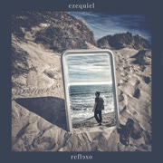
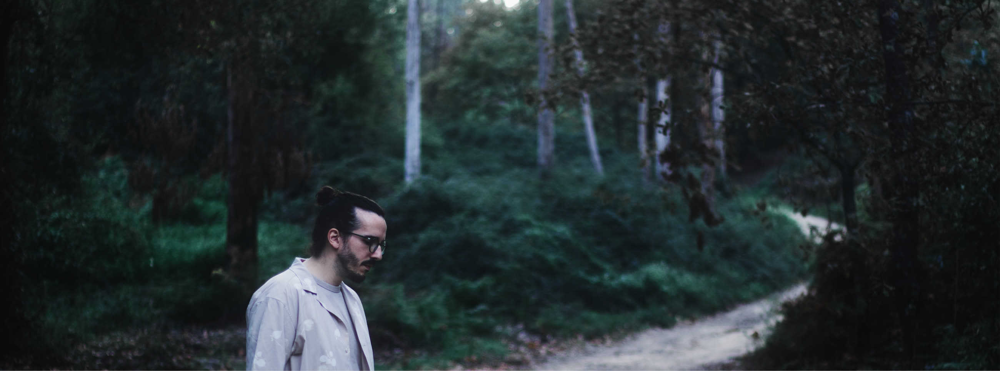
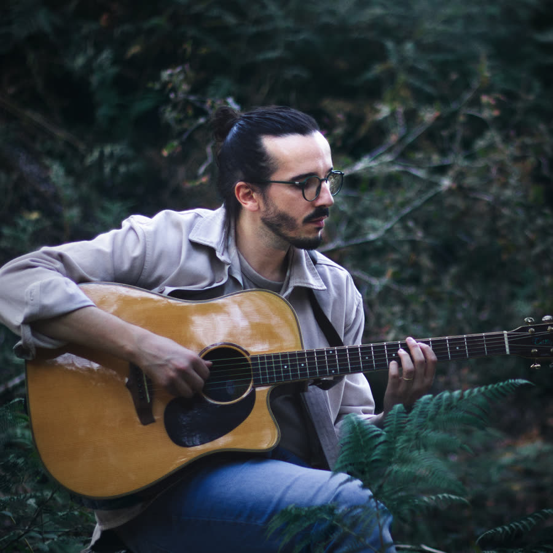

Ciclo
«Não é sobre tentar resolver o ciclo, mas sim sobre habitá-lo.»
- realização e edição
- Ezequiel
- atriz
- Sara Margarida
- fotografia
- Mariana Santiago
- arte
- Cíntia Costa, Mariana Nogueira
álbum de estreia já disponível
estás a ouvir excertos álbum completo nas plataformas

edição físicaReflexo em CDálbum de estreia 2026
Nove canções originais, num universo indie folk cantado em português que percorre um território íntimo e atento ao quotidiano. Um disco que não nasce da urgência de dizer tudo, mas da necessidade de dizer o essencial.

faixasexcertos de 40 s
+ portes de envio. CD com booklet, inclui o álbum digital.
Edição física disponível apenas no Bandcamp.

«Durante muito tempo fiquei preso num ciclo de busca por uma perfeição que sabia que nunca iria encontrar.»

Este regresso aos discos não é um começo, mas uma depuração.
Ezequiel é um cantautor português. A sua música assenta na canção e na palavra, num universo indie folk onde a língua portuguesa é o território natural da escrita e a abordagem criativa assume riscos sem perder intimidade.
Depois da experiência com os Quarto C, com quem editou Casa EP (2014), o músico fafense lançou em 2019 o primeiro EP a solo, Homem: oriente, inteiramente escrito, gravado e produzido pelo próprio. Pelo meio, um doutoramento e vários projetos ligados ao som para cinema.
Em 2026, aos 34 anos, edita Reflexo, o álbum de estreia: um disco que nasce após um período prolongado de silêncio, observação e redefinição pessoal, e que propõe um retrato honesto de quem atravessa mudanças e procura compreender o seu lugar no tempo em que vive.
p.s. o resto da história está no disco